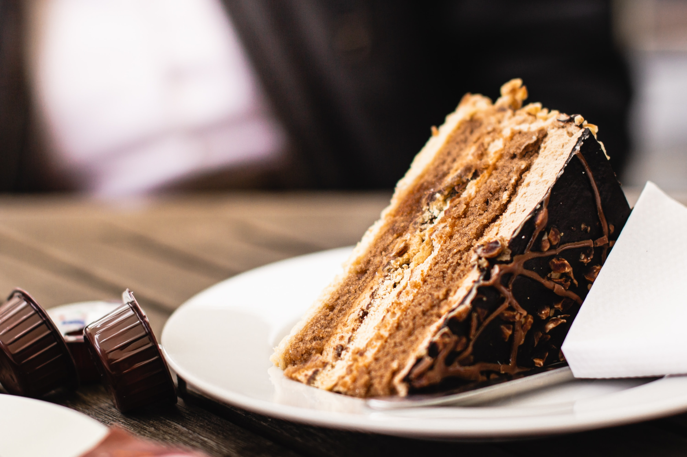

Tarta de queso

Ingredientes
- 4 huevos L
- 600 gr de queso crema
- 200 gr de azúcar
- 350 gr de nata 35 % materia grasa
- 1 cucharada de harina
Modo de preparación
Tarta de Manzana

Ingredientes
- 1 kg de manzanas golden
- 2 huevos
- 4 cucharadas de maizena y 4 de harina de repostería
- 8 cucharadas de azúcar
- 1 vaso de leche entera
- 1 sobre de levadura
- la ralladura de un limón
- el zumo de medio limón
- mermelada de albaricoque o melocotón
- mantequilla para engrasar el molde